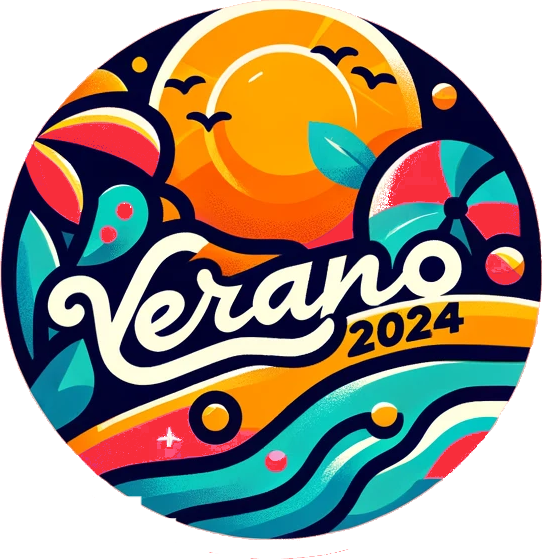

Este verano te abrimos las puertas a una experiencia única de colaboración y servicio con nuestro Programa de Voluntariado Nacional. Buscamos a jóvenes de 18 a 30 años, llenos de entusiasmo y dispuestos a compartir, aprender y crecer mientras hacen una contribución valiosa a proyectos de cooperación.
Unir Fuerzas, Compartir Culturas, Construir Futuro La cooperación es el corazón de nuestro programa. A través de la colaboración en proyectos comunitarios, te involucrarás en la creación de soluciones sostenibles para los desafíos locales. Desde la construcción de infraestructuras comunitarias hasta la implementación de programas educativos, cada iniciativa está diseñada para dejar un impacto positivo duradero.
Características de Nuestra Actividad de Cooperación: Proyectos Impactantes: Participa en una variedad de proyectos que no solo cambian vidas sino que también transforman comunidades, fomentando el desarrollo sostenible y el empoderamiento local. Intercambio Cultural: A través del trabajo conjunto con voluntarios de diversas procedencias, tendrás la oportunidad de sumergirte en intercambios culturales que enriquecen la visión del mundo y fomentan la comprensión mutua. Habilidades para el Cambio Social: Desarrollarás habilidades prácticas en liderazgo, trabajo en equipo y resolución de problemas, preparándote para ser un agente de cambio en tu propia comunidad y más allá.
¿Qué Incluye? Participar en nuestro programa te garantiza alojamiento, todas las comidas, el equipo necesario para las aventuras y acceso a instalaciones de primera. Todo está organizado para que puedas centrarte completamente en la experiencia y en tu desarrollo personal. Además, contamos con cobertura de seguros de responsabilidad civil y accidentes para asegurar tu seguridad en cada momento.
Responsabilidad y Diversión: Aunque se espera que los participantes cubran su transporte hacia y desde el lugar del programa, cada momento de tu estancia promete ser memorable y lleno de diversión.
¡Te esperamos para vivir un verano de solidaridad y cooperación que no solo te transformará a ti, sino que también contribuirá al bienestar de comunidades alrededor del mundo!